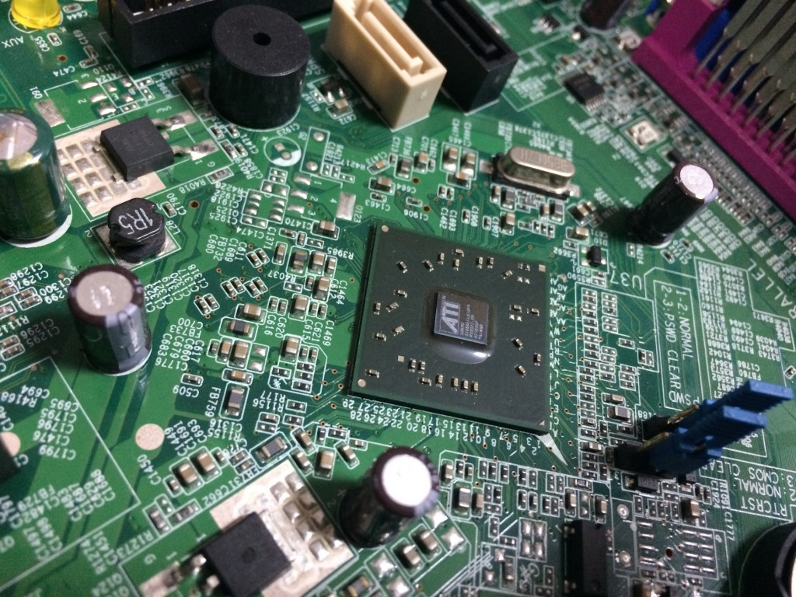

El chipset de una computadora es un circuito integrado que se
encarga de la comunicación entre la CPU, la RAM, el almacenamiento y
otros periféricos. El chipset determina cuántos componentes de alta
velocidad o dispositivos USB puede admitir la motherboard.

3.1.1 Unidad Central de Procesamiento
La CPU es el componente principal que procesa las señales y hace
posible la computación. Actúa como el cerebro de cualquier
dispositivo de computación. Obtiene instrucciones de la memoria,
realiza las tareas necesarias y envía la salida a la memoria.
3.1.2 Controlador de Bus
Un controlador de autobús controla un dispositivo de bus de E/S
individual y proporciona funcionalidad por ranura que es
independiente del dispositivo. Los conductores de autobús también
detectan y notifican dispositivos secundarios que están conectados
al bus.
3.1.3 Puertos de E/S
Los puertos de E/S son puertos de comunicación, que se encargan de
transmitir una serie de datos entre el ordenador y los componentes
periféricos. Es decir, son enchufes que comunican información entre
ambos extremos y muchas veces lleg an incluso a servir para
alimentar a estos energéticamente.
3.1.4 Controlador de Interrupciones
El controlador de interrupciones es un módulo que tiene por función
gestionar las interrupciones de entrada/salida para el procesador.
Esto ahorra diseñar lógica y añadir patitas al procesador. También
proporciona flexibilidad porque permi te idealmente, gestionar un
número ilimitado señales de interrupción (favoreciendo la expansión
del sistema de entrada salida).
3.1.5 Controlador de Acceso Directo a Memoria
El acceso directo a memoria (DMA) es una estrategia de transferencia
de datos que omite la CPU, en lugar de usar un controlador DMA
dedicado para transferir datos entre la memoria y un dispositivo.
Los controladores pueden usar el co ntrolador DMA para transferir
datos directamente.
3.1.6 Circuitos de Temporización
El circuito electrónico que más se utiliza tanto en la industria
como en circuitería comercial, es el circuito tempori zador o de
retardo, dentro de la categoría de temporizadores, cabe destacar el
más económico y también menos preciso c onsistente en una
resistencia y un condensador, a partir de aquí se puede contar con
un sinfín de opciones y posibilid ades.
3.1.7 Circuitos de Control
Se trata de un conjunto de dispositivos automatizados que controlan
la transformación, el transporte y la distribución de la energía
eléctrica en equipos, ya sean industriales o domésticos, además de
regular el flujo de la corriente eléct rica que se necesita para su
correcto funcionamiento.
3.1.8 Controladores de Video
El controlador de la tarjeta de video es un software que permite que
el sistema operativo y la aplicación de software utilicen el
hardware de gráficos de la computadora. (También se conoce como la
unidad de procesamiento de gráficos [GPU]).
3.2 Aplicaciones
En informática, un periférico de entrada/salida o E/S (en inglés:
input/output o I/O) es aquel tipo de dispositivo periférico de un
computador capaz de interactuar con los elementos externos a ese
sistema de forma bidireccional, es decir, que permite tanto que sea
ingresada información desde un sistema externo, como emitir
información a partir de ese sistema. Los Dispositivos Periféricos de
entrada son todos aquellos dispositivos que permiten introducir
datos o información en una computadora para que esta los procese u
ordene.
Funciones:
Un periférico de E/S es el que se utiliza para ingresar (E)
datos a la computadora, y luego de ser procesados por la unidad
central de procesamiento (CPU), genera la salida (S) de
información. Su función es leer o grabar, permanente o
virtualmente, todo aquello que se haga con la computadora, para
que pueda ser utilizado por los usuarios u otros sistemas.
Tipos:
Dispositivos o periféricos de comunicación entre computadoras,
tales como módems y tarjetas de red, por lo general sirven para
entrada y salida. También, los dispositivos de almacenamiento de
datos, como los discos rígidos, la unidad de estado sólido, las
memorias flash, las disqueteras, entre otros, se pueden
considerar periféricos de entrada/salida
3.2.1 Entrada/Salida
Un periférico de entrada/salida o E/S (en inglés: input/output o
I/O) es aquel tipo de dispositivo periférico de un computador capaz
de interactuar con los elementos externos a ese sistema de forma
bidireccional, es decir, que permite tanto que sea ingresada
información desde un sistema externo, como emitir información a
partir de ese sistema.
Entrada
DISPOSITIVOS PERIFÉRICOS DE ENTRADA Los periféricos de entrada
son aquellos que se utilizan para proporcionar datos y señales a
la unidad de procesamiento. Algunos de ellos son, el teclado,
mouse, escáner, cámara web, micrófono y lector de CD/DVD.
Salida
DISPOSITIVOS PERIFÉRICOS DE SALIDA Son capaces de reproducir lo
que ocurre en la computadora para el interés del usuario. La CPU
genera patrones de bits internos, y son estos dispositivos los
encargados de hacerlos comprensibles para el usuario. Algunos de
estos son, el monitor, impresora, auriculares, tarjeta de sonido
y tarjeta de voz.
3.2.2 Almacenamiento
El almacenamiento le permite acceder y almacenar sus aplicaciones,
sistema operativo y archivos por un tiempo indefinido. Mientras que
el escritorio representa la memoria de la computadora, el archivador
representa el almacenamiento de su computadora.
3.2.3 Funtes de Alimentación
La fuente de poder o de alimentación (PSU en inglés) es el
dispositivo que se encarga de transformar la corriente alterna de la
línea eléctrica comercial que se recibe en los domicilios (220 volts
en la Argentina) en corriente continua o directa; que es la que
utilizan los dispositivos electrónicos tales como televisores y
computadoras, suministrando los diferentes voltajes requ eridos por
los componentes, incluyendo usualmente protección frente a
eventuales inconvenientes en el suministro eléctrico, com o la
sobretensión.
3.3 Ambientes de Servicio
El negocio de proveer servicios de datos es mucho más complejo que
la forma en la que se dan los tradicionales servicios, que con
frecuencia se terminan involucrando o necesitando la colaboración de
terceras empresas.
3.3.1 Negocio
Definitivamente, la tecnología en general ha sido la causa principal
y la acción más directa para la transformación del trabajo de las
organizaciones en la posguerra del siglo XX. Tanto los bienes de
capital «duros» (computadores, teléfon os, videos, facsímiles,
grabadoras, etc.), como los programas y sistemas de información y
comunicación en general, han incrementado enormemente la
productividad y eficiencia de las organizaciones. Tenemos como
ejemplos los siguientes: bases de datos en redes de todo orden y
topología, sistemas de reservaciones en aerolíneas, sistemas de
contabilidad y nóminas, archivos clínicos en centros de salud,
sistemas de conmutación electrónica y un sin número de otras aplicac
iones a procesos administrativos.
3.3.2 Industria
La industrialización de los servicios de tecnología de información
va a redefinir el mercado en términos de como las organizaciones
evalúan, compran y seleccionan los servicios y como los vendedores
desarrollan y establecen precios de los servicios. Para lograr esta
estandarización, se requiere un enfoque hacia las soluciones
genéricas y esto debe ser responsabilidad de los proveedores, que
deben de desarrollar, operar y administrar el resultado de estos
genéricos de TI. Aunque los servicios de TI están en proceso de
madurez, la madurez de la industria se ha incrementado en aspect os
evidentes, como la forma en que los servicios son implementados y
administrados.
3.3.3 Comercio Electrónico
El desarrollo de estas tecnologías y de las telecomunicaciones ha
hecho que los intercambios de datos crezcan a niveles
extraordinarios, simplificándose cada vez más y creando nuevas
formas de comercio, y en este marco se desarrolla el Comercio
Electrónico. Se considera “Comercio Electrónico” al conjunto de
aquellas transacciones comerciales y financi eras realizadas a
través del procesamiento y la transmisión de información, incluyendo
texto, sonido e imagen.